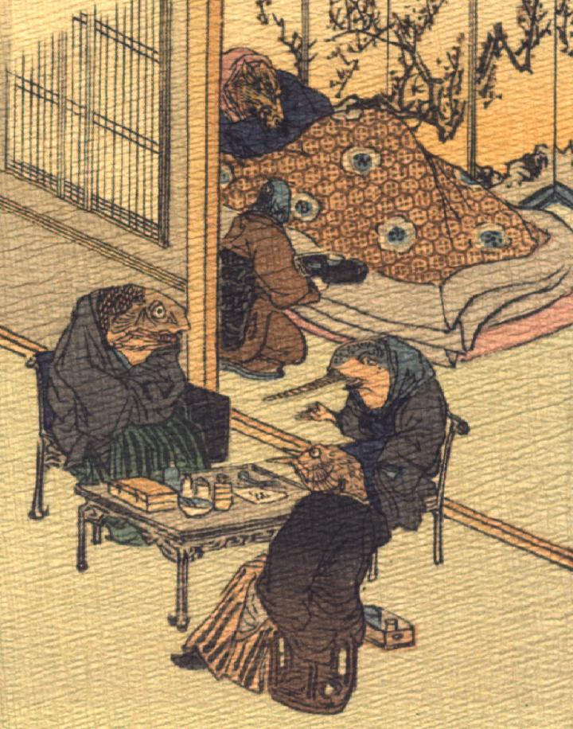

奥の部屋では、竜王が病気で寝込んでいる。そのそばに、女らしき魚が盆に載せた飲み物を持ってきている。手前の部屋では3体の魚たちが椅子に腰かけて、何やら相談をしている。机の上には薬や医者の道具のようなものが置かれている。
著作者：J.Dautremer／出典：親書誌：U426_nichibunken_0107：La meduse simple et naïve／日付：2006／資源識別子：U426_nichibunken_0107_0003_0000
Copyright (c)2010- International Research Center for Japanese Studies, Kyoto, Japan. All rights reserved.